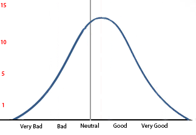
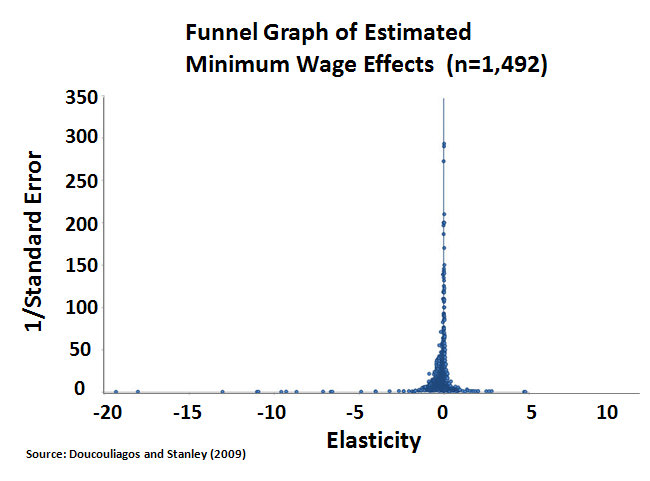

2014년 12월 12일
아퀴나스(Aquinas)는 "단 한 권의 책만 읽은 사람을 경계하라"라는 유명한 말을 남겼다. 나는 여기에 덧붙이고 싶다. 단 하나의 연구 분야에만 매몰된 사람을 경계하라고.
예를 들어 의학 연구를 생각해보자. 어떤 약물이 특정 질병에 대해 약한 효능이 있다고 가정하자. 몇 년 후, 수많은 서로 다른 연구팀이 이 약물을 접하고 온갖 종류의 연구를 수행한다. 최선의 시나리오라면, 평균적인 연구 결과는 실제 결과, 즉 이 약물이 약한 효능이 있다는 사실을 찾아낼 것이다.
하지만 불가피한 변동성과 일부 실험의 품질 차이로 인해 발생하는 무작위 노이즈 또한 존재할 것이다. 결국 우리는 종 모양의 곡선(bell curve)과 유사한 결과가 나올 것이라 예상할 수 있다. 정점은 '약간 효과 있음'에 위치하겠지만, 그 양옆으로 몇몇 연구들이 분포하게 될 것이다. 대략 다음과 같은 식이다.

곡선의 정점은 중립 지점의 오른쪽, 즉 약하게 효과가 있는 지점에 위치하며, 이러한 올바른 결과를 도출한 연구는 약 15편임을 알 수 있다.
하지만 해당 약물이 매우 효과적이라는 연구 결과가 5건 정도 있고, 방향성조차 완전히 놓친 채 약물이 명백히 해롭다는 결과가 나온 연구도 5건 정도 있다. 심지어 약물이 매우 좋지 않으며, 어쩌면 심각하게 위험할 수도 있다는 연구 결과가 1건 존재한다.
사기나 통계적 부정행위는 논외로 하더라도 말이다. 내 말은, 실험 설계상의 일반적인 변동성만으로도 이런 일이 벌어질 것이라는 뜻이다. 실험의 엄밀함을 높이면 벨 커브(bell curve)가 가로로 압착될 수는 있겠지만, 그럼에도 벨 커브는 여전히 존재할 것이다.
실제로는 상황이 이보다 더 심각하다. 위 논의는 모든 이가 정확히 동일한 질문을 조사하고 있다는 가정하에 이루어진 것이기 때문이다.
그 그래프의 제목이 “조울증(Bipolar Disorder) 치료에 있어 이 약물의 효과”라고 가정해 보자.
하지만 어쩌면 그 약물이 양극성 II형보다 I형에서 더 효과적일 수도 있다 (예를 들어 데파코트(Depakote) 같은 경우).
혹은 그 약물이 조울증의 조증에는 매우 효과적이지만, 조울증의 우울증에는 훨씬 덜 효과적일 수도 있다(다시 데파코트(Depakote)의 사례다).
혹은 그 약물이 급성 조증 치료제로는 훌륭하지만, 유지 치료에는 매우 부적합할 수도 있다(데파코트(Depakote)를 예로 들어보자).
만약 당신이 '조울증 치료에 있어 데파코트(Depakote)의 효과'라는 제목의 그래프를 그리고, 연구의 질을 '매우 나쁨'부터 '매우 좋음'까지 표시한 뒤, 유지 요법, 조증, 우울증, 1형 조울증, 2형 조울증 등 모든 연구 결과를 그 그래프에 집어넣는다고 치자. 그렇다면 노이즈를 고려하기 전에도, 편향이나 부실한 실험 설계를 고려하기 전에도, 결과값은 이미 '매우 나쁨'에서 '매우 좋음'까지의 전 범위를 훑게 될 것이다.
그러니 이것이 바로 당신이 '단 하나의 연구만 믿는 사람'을 경계해야 하는 이유다.
수준이 좀 더 높은 대안 의학 웹사이트들에 가보면, 그들은 "연구라는 것은 서양 의학과 거대 제약사(Big Pharma) 음모론이 만들어낸 로고스 중심적이고 남성 중심적인 도구일 뿐이다"라고 말하지는 않는다.
그들은 당신에게 이렇게 말한다. “의학계는 이 약이 끔찍하다는 것을 이미 입증했지만, 무지한 의사들이 여전히 당신에게 이 약을 강요하고 있습니다. 보십시오, 여기 권위 있는 기관에서 발표한 연구 결과가 있습니다. 이 약이 효과가 없을 뿐만 아니라 해롭다는 사실을 증명하고 있죠.”
그리고 그 연구는 실제로 존재할 것이며, 저자들은 명망 높은 과학자들일 것이고, 그 연구는 아마 다른 어떤 연구만큼이나 엄격하고 훌륭하게 수행되었을 것이다.
그러면 어떤 것에는 증거가 있고 어떤 것에는 증거가 없다는 생각을 하며 자라온 많은 이들은 세상에, 저 사람들 말이 맞잖아!라고 생각한다. 반면에, 당신의 주치의가 수상쩍은 대안 의학 웹사이트를 뒤지고 있지는 않을 것이다. 그녀는 전체 문헌을 검토하며... 에서 신중하고 정보에 기반한 결론을 도출해 내고 있을 것이다.
하하, 농담이다. 그녀는 제약회사가 후원하는 아주 근사한 레스토랑의 오찬 모임에 가는 중이다. 제약회사는 이런 기회를 이용해 자기네 약을 홍보하는 짓 따위는 절대로 하지 않을 것이며, 그저 최신 연구 결과에 대한 인식을 높이고 싶을 뿐이라고 그녀를 안심시킨다. 그리고 그 최신 연구 결과에 따르면, 그들의 약은 아주 훌륭하다! 정말 끝내준다! 당신의 의사는 고개를 끄덕인다. 연구 저자들이 명망 높은 과학자들이고, 연구 과정 또한 다른 어떤 연구만큼이나 엄격하고 충실하게 수행되었기 때문이다.
하지만 제약회사가 벨 커브(bell curve)의 '매우 우수한' 쪽 끝단에 위치한 연구 중 하나를 선택했다는 점은 자명하다.
나는 이를 "단 하나의 연구만 믿는 자를 경계하라(Beware The Man of One Study)"라고 불렀지만, 작은 도표를 보면 해당 약물이 "매우 효과적"이라는 연구가 서너 개 정도 있다는 것을 쉽게 알 수 있다. 따라서 의사가 약간 회의적인 반응을 보인다면, 제약회사는 이렇게 말할 수 있을 것이다. "회의적으로 생각하시는 게 맞습니다. 단 하나의 연구로는 아무것도 증명할 수 없죠. 하지만 보십시오. 여기 동일한 결과를 찾아낸 또 다른 연구팀이 있고, 여기 또 다른 팀이 있으며, 이 두 연구를 모두 확증하는 재현 실험 결과까지 있습니다."
그리고 우리 예시 속의 부실한 대체 의학 웹사이트가 근거로 삼을 만한 '매우 형편없는' 연구를 단 하나만 가지고 있는 것처럼 보일지라도, 그들은 그저 '형편없는' 수준의 연구들을 무더기로 추가해 보완할 수 있다. 혹은 약간씩 다른 주제를 다룬 연구들을 전부 끌어모을 수도 있을 것이다. 데파코트(Depakote)는 양극성 우울증 치료에 효과가 없다. 데파코트는 양극성 장애 유지 요법에 효과가 없다. 데파코트는 제2형 양극성 장애에 효과가 없다.
그러니 그냥 "스미스 외 연구진(Smith et al)의 1987년 연구에서 해당 약물은 효과가 없는 것으로 나타났으나, 의사들은 여전히 이를 처방하고 있다"라고 요약해 버리는 것이다. 설령 누군가 원문 논문을 찾아낸다 하더라도(실제로 그러는 사람은 없지만), 스미스 연구진이 "본 연구는 조울증 유지 치료만을 살펴본 것이며, 이는 조울증 급성 조증 치료와는 다른 주제라는 점을 명심하십시오. 우리는 급성 치료에 대해서는 아무런 언급을 하지 않고 있습니다"라고 구체적으로 적어놓지는 않았을 것이다. 논문 제목은 그저 "91명의 환자를 대상으로 한 6개월간의 임상 시험에서 데파코트(Depakote)가 위약 대비 유의미한 차이를 보이지 않음" 정도로 붙어 있을 것이고, 이를 읽는 책임감 있는 전문가들이라면 급성 치료와 유지 치료의 차이를 충분히 인지하고 있을 것이라 믿고 있을 터이다(하하하하하).
따라서 이는 "단 하나의 연구만 공부한 사람을 경계하라"라기보다는, "연구 전반에 걸쳐 상대적으로 완전하며 체리피킹(cherry-picked, 입맛에 맞는 것만 골라내는 행위) 되지 않은 조사를 수행하지 않은, 그 어떤 수준의 공부만 한 사람이든 경계하라"는 말에 가깝다.
나는 의학 과학이 여전히 꽤 건강한 상태이며, 대부분의 논쟁적인 의학적 쟁점들에 대해 의사와 연구자들의 합의가 대체로 옳다고 생각한다.
(정작 걱정해야 할 것은 논란의 여지가 없는 것들이다)
정치에는 이러한 보호 장치가 없다.
예를 들어, 최저임금 문제(제발 이것 좀 봐달라)를 생각해보자. 우리는 모두 뉴저지에서 진행된 크루거(Krueger)와 카드(Card)의 연구에 대해 알고 있다. 높은 최저임금이 경제에 해를 끼친다는 증거를 찾지 못한 연구다. 아마 우리는 이 연구가 비열하고 부정직한 통계적 부정행위로서 완전히 반박되었다는 상반된 주장 또한 알고 있을 것이다. 우리 중 일부는 카드와 크루거가 그러한 주장에 대해 꽤 설득력 있는 재반박을 썼다는 사실을 알지도 모른다. 혹은 그 이후로 방법론적으로 진보된 수많은 대규모 연구들이 나왔으며, 듀브(Dube)처럼 아무런 영향이 없다고 결론 내린 연구가 있는 반면, 루빈스타인(Rubinstein)이나 위더(Wither)처럼 강력한 영향이 있다고 결론 내린 연구들이 있다는 점을 알 수도 있다. 이것들은 단지 예시일 뿐이다. 양측 모두 최소 수십 가지, 아마 수백 가지의 연구가 존재한다.
하지만 메타 분석(meta-analyses)과 체계적 문헌고찰(systematic reviews)을 통해 이 문제를 해결할 수 있지 않을까?
어떤 결과를 원하느냐에 따라 다르다. 고액의 최저임금이 가져오는 부정적 효과라고 추정되는 것들이 사실은 출판 편향(publication bias)일 가능성이 높다는 14건의 연구를 다룬 이 메타 분석을 따를 것인가? 같은 결론을 내리면서 해당 문제를 보정한 후에는 최저임금의 효과가 나타나지 않는다는 점을 발견한 64건의 연구 기반 이 메타 분석을 따를 것인가? 아니면 55개국을 조사하여 대부분의 국가에서 효과가 나타난다는 점을 발견한 이 메타 분석은 어떤가? 그것도 아니라면, 약 100건의 연구를 통해 강력하고 일관된 효과가 있음을 밝혀낸 이 체계적 문헌고찰을 더 선호할지도 모르겠다.
뉴스 매체나 싱크탱크, 경제 블로그, 그리고 그 외의 기관들이 증거의 현주소를 제대로 요약해 줄 것이라고 우리가 믿어도 될까?
CNN은14 신뢰할 만한 연구의 85%가 최저임금이 일자리 감소를 초래한다는 점을 보여주었다고 주장한다. 반면 raisetheminimumwage.com은15 “20년간의 엄격한 경제학 연구 결과, 최저임금 인상이 일자리 감소로 이어지지 않는다는 것이 밝혀졌다… 오늘날 연구자와 기업 모두 증거의 무게가 최저임금 인상으로 인한 고용 감소가 없음을 보여준다는 점에 동의한다”라고 선언한다. 모델드 비헤이비어(Modeled Behavior)는16 “최근 최저임금 연구의 대다수가 최저임금이 실업을 증가시킨다는 가설을 뒷받침한다”라고 말한다. 예산정책우선순위센터(Center for Budget and Policy Priorities)는17 “최저임금 인상이 저임금 노동자의 고용을 줄인다는 흔한 주장은 실증 경제학에서 가장 광범위하게 연구된 주제 중 하나다. 증거의 무게를 보면 그러한 영향은 미미하거나 아예 없다”라고 말한다.
좋다, 알겠다. 그렇다면 경제학자들은 어떤가? 그들은 전문가처럼 보이는데, 그들은 어떻게 생각하는가?
자, 500명의 경제학자들이 서명한 서한에서, 경제학이라는 과학적 관점으로 볼 때 최저임금을 인상하는 것은 좋지 않은 생각이라고 정책 입안자들에게 알렸다. 꽤 유망한 합의처럼 들린다...
…다만 600명의 경제학자들이 서명한 정책 입안자 대상 서한에서, 경제학이라는 과학은 최저임금을 인상하는 것이 좋은 아이디어라는 점을 보여준다고 주장했다는 점이 예외다. (제보: 그레그 맨큐(Greg Mankiw))
좋다. 그렇다면 경제학자들을 대상으로 정식 조사를 해보자. 이제 어떻게 될까? 이보다 더 편향되지 않은 출처가 있을까 싶은 raisetheminimumwage.com에서는 다음과 같이 자신 있게 말한다. “참고할 만한 사례로 시카고 대학교 부스 경영대학원(University of Chicago’s Booth School of Business)이 2013년에 실시한 조사가 있는데, 여기서 저명한 경제학자들은 최저임금을 인상하고 이를 연동했을 때의 이득이 비용보다 크다는 점에 거의 4대 1의 비율로 동의했다.”
하지만 이름부터가 편향되지 않은 출처처럼 보이려고 지나치게 애쓴 티가 나는 고용정책연구소(Employment Policies Institute)에 따르면, “AEA(미국경제학회) 소속 노동경제학자의 73% 이상이 최저임금의 상당한 인상이 고용 감소로 이어질 것이라고 믿으며, 68%는 이러한 고용 감소가 저숙련 노동자들에게 불균형적으로 집중될 것이라고 생각한다. 최저임금 인상이 빈곤을 완화하는 효율적인 방법이라고 생각하는 비율은 단 6%에 불과하다.”
그러니 이 모든 과정은 지독하게 복잡하다. 하지만 아주 세밀하게 파고들지 않는 한, 당신은 결코 그 사실을 알지 못할 것이다.
만약 당신이 보수주의자라면, 당신이 신뢰하는 사이트에서 보게 될 내용은 대략 다음과 같을 것이다.
경제학 이론은 최저임금 인상이 고용을 감소시킨다는 점을 항상 보여주었지만, 좌파들은 이 기본적인 사실을 결코 받아들이려 하지 않았다. 1992년, 그들은 최저임금 인상으로 인한 부정적 효과가 없음을 보여준다고 주장한 카드와 크루거(Card and Krueger)의 단일 연구를 대대적으로 홍보했다. 하지만 이 연구는 즉각적으로 반박되었으며, 통계적 부정행위와 "숫자 조작"에 기반했다는 사실이 밝혀졌다. 그 이후로 우리가 이미 알고 있었던 사실, 즉 높은 최저임금은 경제적 자살 행위라는 점을 확인해 주는 수십 편의 연구가 발표되었다. 체계적 문헌고찰과 메타 분석(Neumark 2006, Boockman 2010)은 압도적 다수의 연구가 이 사실에 동의하고 있음을 일관되게 보여주며, 경제학자의 73% 또한 마찬가지다. 이것이 바로 최근 500명의 일류 경제학자들이 정책 입안자들에게 신뢰를 잃은 자유주의적 최저임금 이론에 현혹되지 말라고 촉구하는 서한에 서명한 이유다. 뜬구름 잡는 자유주의적 헛소리에 귀를 기울이는 대신, 실증적 증거와 압도적 다수 경제학자의 의견에 귀를 기울여 최저임금 인상에 반대하라.
그리고 만약 당신이 좌파라면, 당신이 신뢰하는 사이트들에서 발견하게 될 내용은 대략 다음과 같을 것이다.
과거에는 최저임금이 실업률을 높인다고 믿었다. 하지만 카드와 크루거(Card and Krueger)의 유명한 1992년 연구는 그러한 통념을 완전히 깨부수었다. 그 이후로 해당 결과는 50차례 이상 재현되었으며, 추가적인 메타 분석(Card and Krueger 1995, Dube 2010)에서도 어떠한 영향도 발견되지 않았다. 주류 경제학자들은 4대 1의 비율로 최저임금 인상의 이득이 비용보다 크다는 점에 동의하며, 이것이 바로 600명이 넘는 경제학자들이 정부에 정확히 그렇게 하라고 촉구하는 청원서에 서명한 이유다. 이미 반증된 이론에 기반한 보수 진영의 공포 마케팅에 귀를 기울이는 대신, 실증적 증거와 압도적 다수의 경제학자들의 의견에 귀를 기울여 최저임금 인상을 지지하라.
한번 해보라. 구글에 그 사안을 검색해서 어떤 내용이 나오는지 확인해30 보라. 만약 내가 위에서 말한 내용과 완전히 일치하지 않는다면, 그건 보통 그들이 그 정도 수준의 학술적 엄밀함조차 갖추지 못했기 때문이다. 사이트의 절반은 그저 카드(Card)와 크루거(Krueger)를 인용하는 것으로 끝내버린다!
수많은 연구 결과와 전문가 명단을 늘어놓는 이런 사이트들은 매우 설득력 있게 다가온다. 그리고 그중 절반은 틀렸다.
교육 과정의 어느 시점에 이르면, 대부분의 똑똑한 사람들은 권위에 기반한 주장을 그대로 믿지 말아야 한다는 점을 배운다. 만약 누군가 "내가 믿음직한 사람처럼 보이니 최저임금에 대해서는 내 말을 믿으라"고 말한다면, 이들 대부분은 머릿속의 뉴런 하나쯤은 "증거를 요구해야겠다"라고 반응할 것이다. 만약 그들이 정말로 똑똑하다면, "동료 검토를 거친 실험 연구(peer-reviewed experimental studies)"라는 마법의 단어를 사용할 것이다.
하지만 나는 대부분의 똑똑한 사람들이 다음의 사실을 깨닫지 못했을까 봐 걱정된다. 수십 건의 연구 목록, 여러 편의 메타 분석, 수백 명의 전문가, 그리고 거의 모든 학자가 당신의 논지를 지지한다는 전문가 설문조사 결과가 있다 하더라도, 이 모든 것이 여전히 헛소리일 수 있다는 사실 말이다.
안타까운 일이다. 교육받은 청중을 현혹시키려는 사람들이 정확히 바로 그 방법을 사용할 것이기 때문이다.
나는 급진적 회의주의를 설파하고 싶은 것이 아니다.
예를 들어, 최저임금 문제에 대해 살펴보면 오직 한쪽 측에서만 퍼널 플롯(funnel plot)을 제시했다는 점이 눈에 띈다. 퍼널 플롯은 보통 출판 편향(publication bias)을 조사하는 데 사용되지만, 또 다른 용도가 있다. 바로 위에서 언급한 '종형 곡선'을 거의 정확하게 시각화하여 보여준다는 점이다.

이것은 정규분포(bell curve)라기보다는 바늘 모양의 곡선에 가깝지만, 요점은 여전하다. 곡선이 0을 중심으로 형성되어 있다는 것은, 이 모든 소음 속에 실제 신호라고 할 만한 증거가 어느 정도 존재한다는 뜻이다. 곡선이 오른쪽보다는 왼쪽으로 더 치우쳐 있는데, 이는 최저임금의 긍정적 효과보다 부정적 효과를 발견한 연구가 더 많았음을 의미한다. 하지만 정규분포가 비대칭적이라는 점에서, 우리는 이를 아마도 출판 편향(publication bias) 때문이라고 해석한다. 결론적으로, 이번 사안에 대해서는 리버럴(liberals)들의 주장이 옳다는 증거가 어느 정도는 있다고 생각한다.
물론, 누군가 내가 연구 결과나 메타 분석, 전문가 설문 조사 같은 것들에 이제 통달했다는 사실을 눈치채고, 깔때기 도표(funnel plots)를 조작할 방법을 찾아냈을 가능성도 있다. 나는 이 가능성을 전혀 배제하지 않는다.
(좋다, 나는 어느 정도 급진적 회의주의를 설파하고 싶다)
또한, 어느 한쪽이 옳다는 식의 단순한 논리보다 훨씬 더 복잡한 문제라는 점을 언급해야겠다. 최저임금의 효과는 어떤 산업인지, 주 정부가 정한 임금인지 연방 정부가 정한 임금인지, 경기 침체기인지 호황기인지, 그리고 5달러에서 6달러로 올리는 것인지 아니면 20달러에서 30달러로 올리는 것인지 등에 따라 아마 다르게 나타날 것이다. 해당 그래프에는 -5보다 더 심각한 효과를 보여주는 연구가 11개나 있으며, 이 연구들이 각자 선택한 세부 문제에 대해서는 모두 정확할 가능성이 매우 높다. 이는 데파코트(Depakote)가 조증 치료제로는 효과적일지 몰라도 항우울제로는 최악일 수 있다는 사례와 매우 비슷하다.
(사실 이 모든 것을 다 파헤치는 것보다 급진적 회의주의(radical skepticism)를 받아들이는 편이 훨씬 더 매력적으로 들린다)
하지만 여전히 의문은 남는다. (대부분의 경우처럼) 퍼널 플롯(funnel plot)이 없을 때는 어떻게 되는가?
딱히 마땅한 긍정적인 답변은 없다. 하지만 꽤 괜찮은 부정적인 답변들은 몇 가지 있다.
모든 증거를 다 조사했다는 확신이 없다면, 대부분의 사안에 대해 스스로의 확신을 낮추어라.
명백히 편향된 웹사이트들(예: 프리 리퍼블릭(Free Republic), 데일리 코스(Daily Kos), 닥터 오즈(Dr. Oz))이 어떤 쟁점에 대해 "증거의 현주소"를 알려주겠다고 말할 때는, 설령 그 증거들이 정말로 당당해 보일지라도 믿지 마라. "X에 관한 근거 없는 믿음과 사실들" 같은 목록을 게시한 사이트라면 두 배로 주의하고, "내집단 구성원이 실제 '사실'을 이용해 Y에 관한 외집단의 거짓말을 '박살'내다" 같은 표현을 쓰는 사이트라면 네 배로 주의하며, 래셔널위키(RationalWiki)라면 여덟 배로 주의하라.
가장 중요한 것은, 누군가 특정 관점을 지지하는 압도적인 증거를 제시하는 것처럼 보일지라도, 반대편에서도 그만큼 압도적인 증거를 가지고 있는지 간단히 구글 검색을 통해 확인하기 전까지는 이를 믿지 말라는 점이다.
Please provide the English text you would like me to translate. You have provided the header and the category, but the actual paragraph to be translated is missing.
분노의 톡소플라스마(The Toxoplasma Of Rage)홈(Home)무한 부채(Infinite Debt)
(제공된 텍스트가 없습니다. 번역할 내용을 입력해 주세요.)